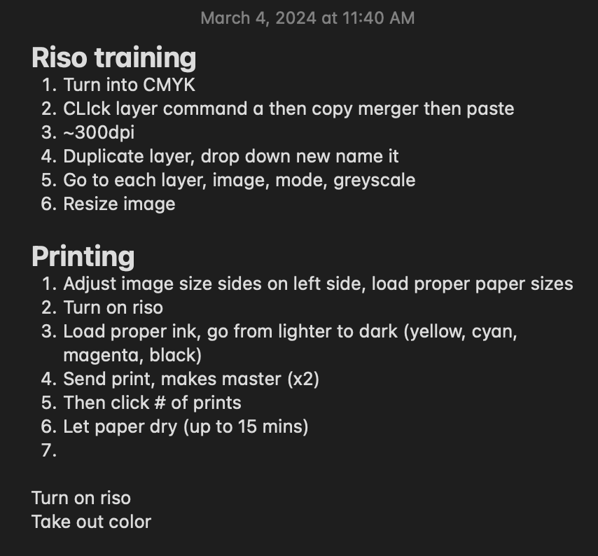
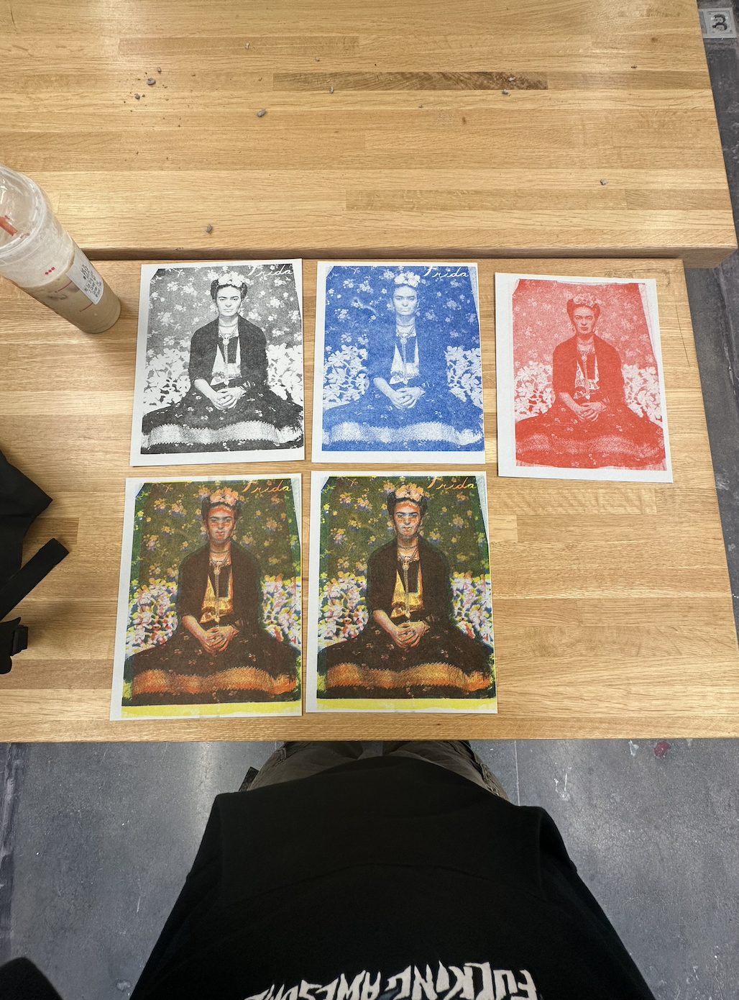

this week i focused on finishing up collecting my assets. as of now i have only been able to photograph washington sq park and collect pond park and have the files organized. my goal by the end of monday is to be done with asset collect by photographing the brooklyn promenade. here are the contact sheets from the park:
my goals for next week will be to design the first zine as much as i can and get the printing situation sorted out. i spoke with the people at the design lab and they told me i am free to use it. my main concern is before the risograph printer had a bunch of resources such as paper size dimensions it can take, colors availabe, and tutorials but i currently cant find any of these resources. i think it would be best to meet with sam and ask about the risograph situation and if that is not a viable option, i will need to pivot the viability of printing out my zine or perhaps find an outside source.
for now i will just focus on editing my images and preparing them for getting risoprinted and also organzing my text to go along with my images.
i also came up with some ideas to include in the mini zines:
- history summary
- google reviews
- collection of photos from iphone
- timeline
**UPDATE:
this morning i went to the design lab and was luckily able to get trained for the risograph printer. we went over paper sizes, how to prepare files, and how to handle the risograph. here are some of my notes for how to operate the risograph:

we also were able to run some test prints:
